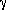
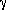
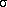

|
Levels is a cluster of three numeric values corresponding to number of levels in the A, B, and C factors, as well as the effects of the A, B, and C factors (fixed or random).
 |
Level A is the number of levels in A if A is fixed, or the negative number of levels in A if A is random.
|
|
Level B is the number of levels in B if B is fixed, or the negative number of levels in B if B is random.
|
|
Level C is the number of levels in C if C is fixed, or the negative number of levels in C if C is random.
|
|
 |
X contains all the observational data.
|
 |
Index A contains the level of factor A to which the corresponding observation belongs.
|
|
Index B contains the level of factor B to which the corresponding observation belongs.
|
|
Index C contains the level of factor C to which the corresponding observation belongs.
|
|
observations per cell is the number of observations in each cell. It is the same for all cells.
|
 |
Info is an 8 by 4 matrix organized where the first column corresponds to the sums of squares associated with the respective factors (A, B, C), the respective interactions (AB, AC, BC, ABC), and residual error.
The second column corresponds to the respective degrees of freedom.
The third column corresponds to the respective mean squares.
The fourth column corresponds to the respective F values.
|
 |
Significance is a cluster of seven numerical values corresponding to the significance levels.
 |
sig A is the computed level of significance associated with factor A.
|
|
sig B is the computed level of significance associated with factor B.
|
|
sig C is the computed level of significance associated with factor C.
|
|
sig AB is the computed level of significance associated with the interaction of factors A and B.
|
|
sig AC is the computed level of significance associated with the interaction of factors A and C.
|
|
sig BC is the computed level of significance associated with the interaction of factors B and C.
|
|
sig ABC is the computed level of significance associated with the interaction of factors A, B, and C.
|
|
 |
error returns any error or warning from the VI. You can wire error to the Error Cluster From Error Code VI to convert the error code or warning into an error cluster.
|
In any ANOVA, you look for evidence that the factors or interactions among factors have a significant effect on experimental outcomes. What varies with each model is the method used to do this.
3D ANOVA Random and Fixed Effects
A factor is a random effect if it has a large population of levels about which you want to draw conclusions but such that you cannot sample from all levels. You thus pick levels at random and hope to generalize about all levels. A factor is a fixed effect if you can sample from all levels about which you want to draw conclusions.
3D ANOVA Statistical Model
Let xpqrs equation be the sth observation at the pth, qth, and rth levels of A, B, and C respectively, where s = 0, 1, ..., L – 1. Express each observation as the sum of eight components. Thus,
xpqrs = µ +  p +
p +  q + r + ()pq + ()pr + ()qr + ()pqr +
q + r + ()pq + ()pr + ()qr + ()pqr +  pqrs
pqrs
where
- µ is the overall mean.
- p is the average effect of the pth level of factor A.
- q is the average effect of the qth level of factor B.
- r is the average effect of the rth level of factor C.
- ()pq is the two-factor interaction of the pth level of factor A with the qth level of factor B.
- ()pr is the two-factor interaction of the pth level of factor A with the rth level of factor C.
- ()qr is the two-factor interaction of the qth level of factor B with the rth level of factor C.
- ()pqr is the three-factor interaction of the pth level of factor A, the qth level of factor B, and the rth level of factor C.
- pqrs is random fluctuation.
3D ANOVA Hypotheses
Each of the following hypotheses is a different way of saying that a factor or an interaction among factors has no effect on experimental outcomes. This VI assumes that there are no effects and then seeks evidence to contradict these assumptions. The following are the seven hypotheses:
- (A) that p = 0 for all levels p if factor A is fixed, and that A2 = 0 if factor A is random.
- (B) that q = 0 for all levels q if factor B is fixed, and that B2 = 0 if factor B is random.
- (C) that r = 0 for all levels r if factor C is fixed, and that C2 = 0 if factor B is random.
- (AB) that ()pq = 0 for all levels p and q if factors A and B are fixed, and that AB2 = 0 if either factor A or B is random.
- (AC) that ()pr = 0 for all levels p and q if factors A and C are fixed, and that AC2 = 0 if either factor A or C is random.
- (BC) that ()qr = 0 for all levels p and q if factors B and C are fixed, and that BC2 = 0 if either factor B or C is random.
- (ABC) that ()pqr = 0 for all levels p, q, and r if factors A, B, and C are fixed, and that ABC2 = 0 if any of factors A, B, or C is random.
3D ANOVA Assumptions
The 3D ANOVA VI makes the following assumptions:
- Assume that for each p, q, and r, pqrs is Normally distributed with mean 0 and variance e2.
- If a factor A is fixed, assume the populations of measurements at each level of A are Normally distributed with mean p + µ and variance A2 and that all the populations at each of the levels have the same variance. In addition, assume that p sum to zero. Analogous assumptions are made for B and C.
- If a factor A is random, assume the effect of the level of A itself, p, is a random variable Normally distributed with mean 0 and variance A2. Analogous assumptions are made for B and C.
- If some of the factors, such as A and B, associated with the effect of an interaction are ()pq fixed, then assume that the populations of measurements at each level of A and B are Normally distributed with mean
µ + p + q + ()pq
and variance AB2. For any fixed p, the means ()pq sum to zero when summing over all q. Similarly, for any fixed q, ()pq sum to zero when summing over all p.
- If any of the factors, such as A and B, associated with the effect of an interaction ()pq are random, assume the effect is a random variable Normally distributed with mean 0 and variance AB2. If A is fixed but B is random, assume that for any fixed q, the means ()pq sum to zero when summing over all p. Similarly, if B is fixed but A is random, assume that for any fixed p the means ()pq sum to zero when summing over all q.
- Assume all effects taken to be random variables are mutually independent.
3D ANOVA General Method
In each of the models, the VI breaks up the total sum of squares, tss, a measure of the total variation of the data from the overall population mean, into a number of component sums of squares.
tss = ssa + ssb + ssc + ssab + ssac + ssbc + ssabc + sse
Each component in the sum tss is a measure of variation attributed to a certain factor or interaction among the factors. Here ssa is a measure of the variation due to factor A; ssb is a measure of the variation due to factor B; ssc is a measure of the variation due to factor c; ssab is a measure of the variation due to the interaction between factors A and B; and so on for ssac, ssbc, and ssabc. Also, sse is a measure of the variation due to random fluctuation. The VI divides each by its own degrees of freedom to obtain the corresponding averages msa, msb, msc, msab, msac, msbc, msabc, and mse. For example, if factor A has a strong effect on the experimental observations, then msa will be relatively large.
Testing the 3D ANOVA Hypotheses
For each hypothesis, the VI computes number f that is used to calculate the associated sig probability. For example, for the hypothesis (A), that (p = 0 for all the levels p), (fixed A), the VI computes

then
sigA = Prob{Fa – 1, abc(L – 1) > fa}
where
Fa – 1, abc(L – 1)
is an F distribution with degrees of freedom a – 1 and abc(L – 1). You then can use the probabilities sigA, sigB, sigC, sigAB, …, sig ABC to determine when you should reject the associated hypotheses (A), (B), (C), (AB), …, (ABC).
How do you know when to reject the null hypothesis? For each hypothesis, you choose a level of significance. This level of significance is how likely you want it to be that you mistakenly reject the hypothesis (a common choice is 0.05). Compare your chosen level of significance with the associated sig probability output. If the sig probability is less than your chosen level of significance, you should reject the null hypothesis. For example, if A is a random effect, your level of significance is 0.05, and sigA = 0.03, you must reject the hypothesis that A2 = 0 and conclude that factor A has an effect on the experimental observations.
With some models there are no appropriate tests for certain hypotheses. If such is the case, the output parameters directly involved with the testing of these hypotheses are –1.0.
3D ANOVA Formulas
Let xpqrs be the sth observation at the pth, qth, and rth levels of A, B, and C respectively, where s = 0, 1, ..., L – 1.
Let
a = |A levels|
b = |B levels|
c = |C levels|
then
 Add to the block diagram
Add to the block diagram Find on the palette
Find on the palette